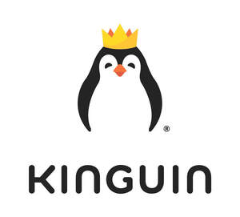

Trade Mark Journal No.2025/051 19 December 2025
UK00004271067 29 September 2025 (35,36,38,42)

- Class 35
- Wholesale services in relation to games; Wholesale services in relation to computer software; Lead generation services; Marketing, advertising and promotion services; Marketing services in the field of web site traffic optimization; Database marketing services; Database marketing; Digital marketing services; Administration of competitions for advertising purposes; Administration of contests for advertising purpose; Advertising services for the promotion of e-commerce; Advertising of the goods of other vendors, enabling customers to conveniently view and compare the goods of those vendors; Business process management; Advertising and business management consultancy; Provision of an on-line marketplace for buyers and sellers of games software, video games and PC games; Provision of an online marketplace for buyers and sellers of downloadable digital image files authenticated by non-fungible tokens [NFTs]; Providing online marketplaces for sellers of goods and or services; Retail of third-party pre-paid cards; Provision of an online marketplace for buyers and sellers of non-downloadable virtual goods, in-game currency, in-game items and digital content.
- Class 36
- Issuance of prepaid gift cards; Issuing of payment gift vouchers; Issuance of prepaid vouchers; Financial sponsorship of esports activities; Electronic transfer of cryptocurrency; Financial trading of cryptocurrency; Financial exchange of cryptocurrency; Provision of prepaid cards and vouchers.
- Class 38
- Provision of access to an electronic marketplace [portal] on computer networks; Provision of access to an electronic marketplace [portal] on computer networks for virtual goods, in-game currency, in-game items and digital content in online games; Providing access to web sites on the internet; Providing access to portals on the Internet; Providing online forums for communication in the field of electronic games; Providing Internet chatrooms and Internet forums; Electronic exchange of messages via chat lines, chatrooms and Internet forums; Leasing access time to online games; Signal transmission for electronic commerce via telecommunication systems and data communication systems; Message sending, receiving and forwarding; Message sending and receiving services; Transmission of videos, movies, pictures, images, text, photos, games, user-generated content, audio content, and information via the Internet; Providing access to gambling and gaming websites on the internet; Providing user access to search engines; Chatroom services for social networking; Transmission of digital information; Telecommunication services provided via Internet platforms and portals; Providing user access to platforms on the Internet; Transmission of multimedia content via the Internet.
- Class 42
- Providing application programming interfaces (APIs); Providing analytical tools in the form of SaaS software; Rental of video game software; Creating and maintaining IT systems supporting marketing and sales; Software as a service [SaaS]; Platforms for gaming as software as a service [SaaS]; Design and development of video game software; Platform as a service [PaaS]; Cloud storage services for electronic data; Blockchain as a service [BaaS]; Providing temporary use of non-downloadable software for enabling users to access virtual goods, in-game currency, in-game items and digital content in online games; Cross-platform conversion of digital content into other forms of digital content; Hosting of digital content; Hosting of digital content on the Internet; Hosting of digital content online; Platform as a service [PaaS] featuring software platforms for transmission of images, audio-visual content, video content and messages; Providing online non-downloadable computer software for minting non-fungible tokens [NFTs].
Kinguin Digital Limited
Representative: Bea Ildem